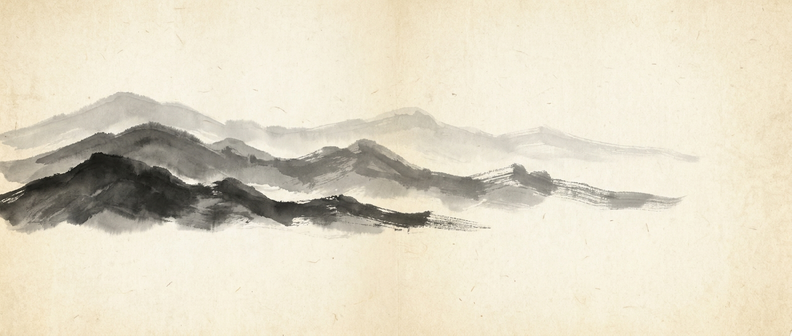
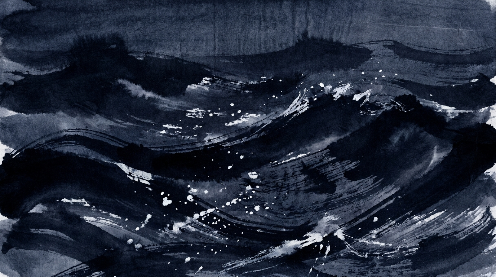

국악 힙합 · GUGAK HIP-HOP
조선 이야기JOSEON STORIES
노래가 먼저 있었습니다. 스물여덟 곡, 일곱 장의 앨범, 하나의 이야기 — 궁궐에서 시작해 바다를 건너 북쪽 국경에서 이어집니다. 가사는 전곡 한국어이고, 이야기는 음악에서 태어났습니다.
붓은 꺾여도 먹은 마르지 않는다 불은 태우고, 소금은 지키고, 쇠는 기억한다
제 1 부
불의 삼부작
THE FIRE TRILOGY



제 2 부
바다 삼부작
THE SEA TRILOGY


제 3 부
쇠 삼부작
THE IRON TRILOGY · 연재 중
제 7 장
눈과 쇠
SNOW AND IRON
북쪽이 뚫린다. 궁궐과 반란군이 같은 편에 선다.
연재 중 →제 8 장
쇠와 피
IRON AND BLOOD
동맹은 버티고 또 무너진다.
준비 중제 9 장
봄과 녹
SPRING AND RUST
쇠가 녹슬고, 봄이 돌아온다.
준비 중
먼저 음악이 있었습니다
거문고 · 가야금 · 해금 · 대금 · 장구 · 북 · 태평소가 붐뱁 위에 만납니다.
전곡 한국어 가사.